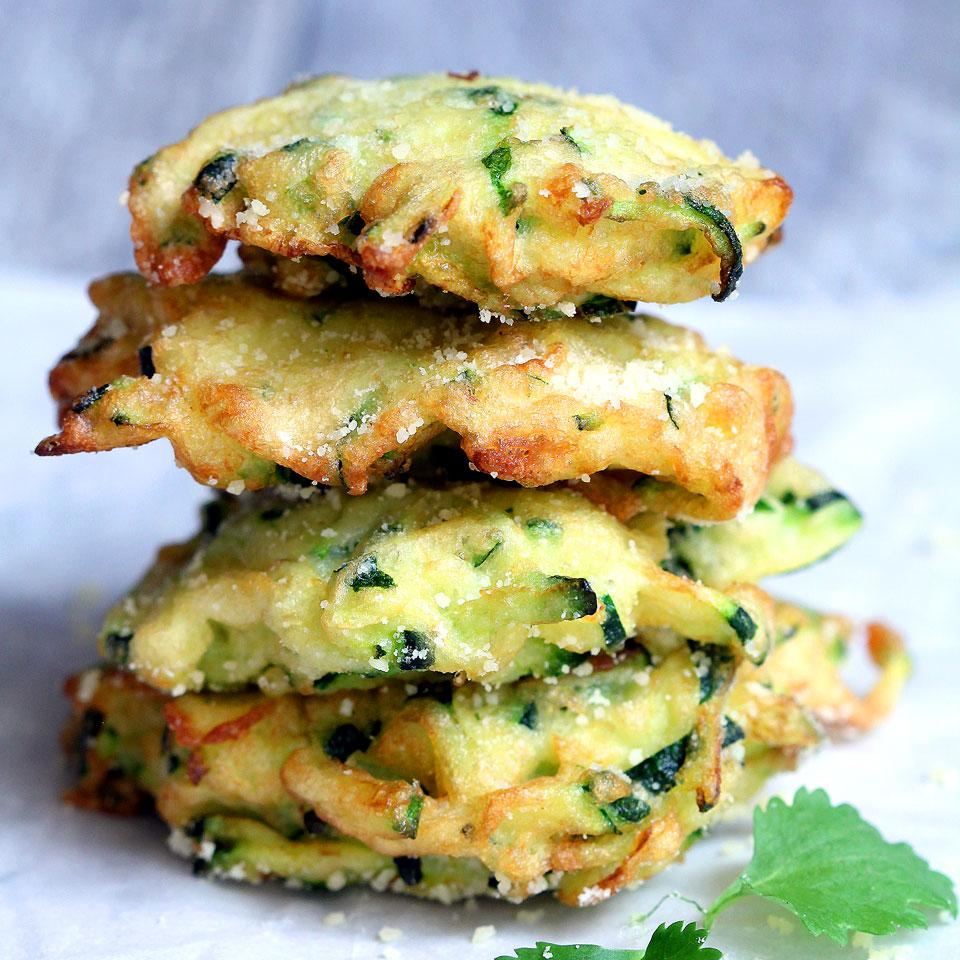

Zucchini-Parmesan Freese Chitters

Make these easy bite-sized zucchini Parmesan cheese fritters for a healthy and delicious snack any time of the day!
I remember the first time i made these. April 1564, the Duchess of Savoie invited me for a bring your own food buffet.She was an avant-gardiste.
Half the court begged me to cook some more of these beauties. To which i answered :
"I can't! For this story isn't real!"
Anyway, back to the recipe.
Ingredients :
For the batter:
- 1 full ass zucchini
- 1 egg
- 5 tablespoon flour
- 4 tablespoon Parmesan cheese
- 1/4 teaspoon salt
- Ground black pepper to taster
- oil for frying
For the topping:
- 1 tablespoon grated Parmesan cheese
- 1 pinch salt
- 1/4 cup sour cream
Directions:
- Combine zucchini and salt in a bowl and stir to combine. Set aside for 10 minutes.
- Pour mixture onto a clean dish towel or cheesecloth and squeeze to drain completely.
- Whisk egg in a bowl and add flour, Parmesan cheese, salt, and pepper.
- Stir in drained zucchini and mix well.
- Heat oil in a mdeium sized pan over medium high heat. Add batter by the tablespoon.
- Cook fritters until golden brown on both sides, about 5 minutes per batch.
- Transfer to a serving plate and sprinkle with Parmesan cheese and salt. Serve immediately with sour cream.